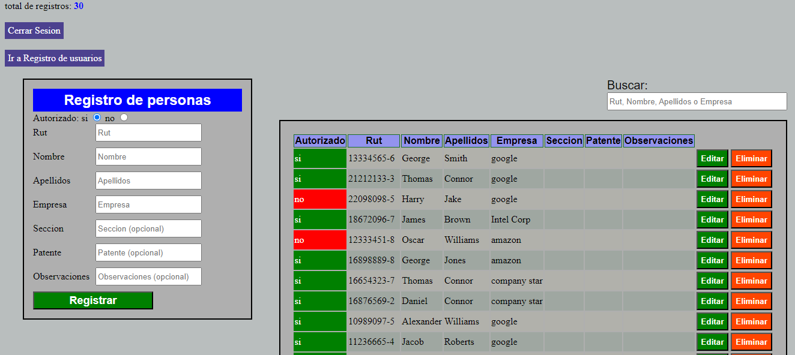

En desarrollo
Este es un proyecto que tiene como objetivo registrar personas y poder ver y editar si está bloqueado no por la empresa.
Posee un loguin de inicio de sesión para usuarios tanto invitados como administradores.
Usuario invitado solo puede buscar información y usuarios administradores pueden buscar y editar la información.
El proyecto está conectado a una base de datos.
Los campos están validados por lo cual no se puede ingresar rut duplicados y caracteres que no correspondan al campo de registro.
Se realizó con tecnología Ajax por lo cual trabaja de forma asíncrona sin tener que recargar la página cada vez que se interactúe con la base de datos.
Muestra sus respectivos mensajes de error cada vez que se ingrese información incorrecta.